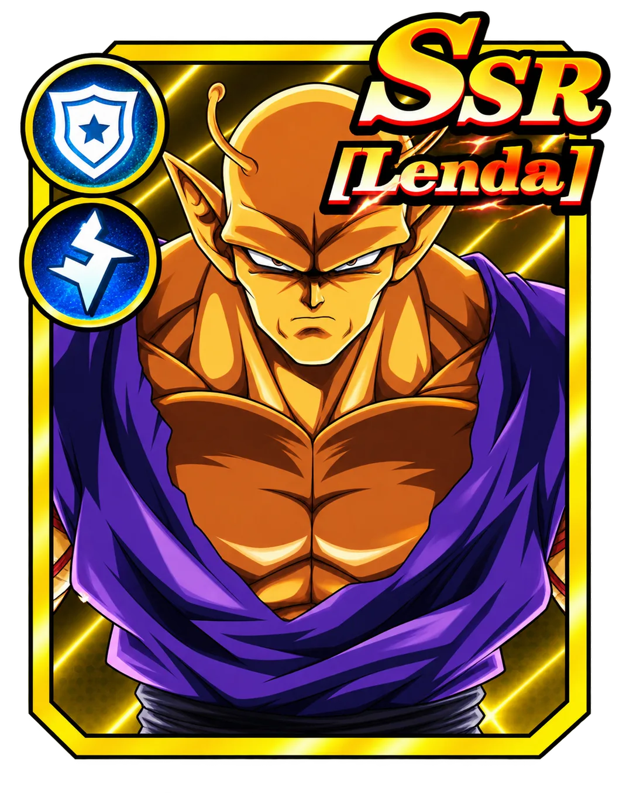

Orange Piccolo

Skill: MAX. Explosive Strike
[Physical ATK] Attacks a single enemy, with a 35% chance to cause [Silence] and a 60% chance to cause [Knockback]. Reduces the target's special attack damage by 25% (2 turns). Recovers 8% of HP and 100 Rage for itself and the Warriors in the same row. If there is a [Saiyan] warrior in the same column, its own recovery is doubled. [Silence]: unable to use Supreme, lasts 1 turn.
Supreme: SMAX. Super Magic Cannon
[Special Strike] Raises its own Damage Rate and Damage Reduction Rate by 30% (2 turns). Attacks a single enemy and then enters the [Power Accumulation] state. HP is restored to at least 60%. This effect can be triggered at most 2 times per battle. If it cannot enter [Power Accumulation], recovers 15% of its own HP. [Power Accumulation State]: In this state, it cannot act. Immune to [Control] effects. Damage taken from Special Strikes is reduced by 40%. When taking skill attacks and Special Strikes, gains [Rage] equal to 50% of its own Attack. 50% of the damage taken is accumulated as [Rage] (max 5 times its own Attack). If [Rage] is full, releases [Deadly Energy Cannon], empties [Rage] and returns to the normal state. [Deadly Energy Cannon]: Deals [Special Strike] damage equal to 250% of Attack to a random row of enemies. Deals extra damage to the target equal to 30% of its own lost HP. Applies 120% of the current [Rage] value to front-row units. Recovers 25% of its own HP. This damage ignores the [Death Immunity] effect.
Combo attack: Blast Wave
[Physical Attack] Attacks a single enemy, follows up after [Small Launch], causes [Knockback].
Open the full profile on Zenkyo